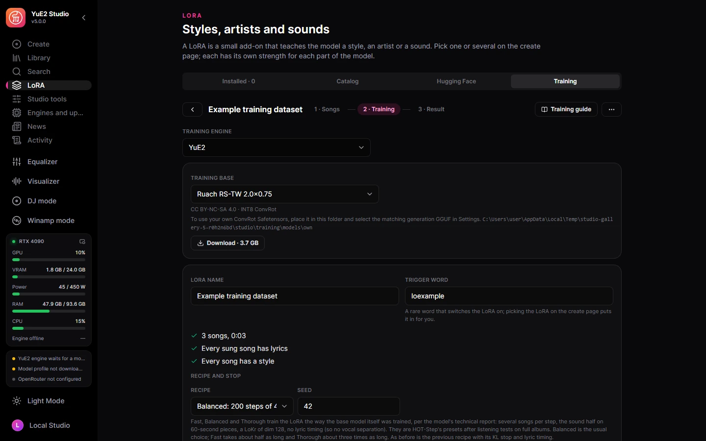
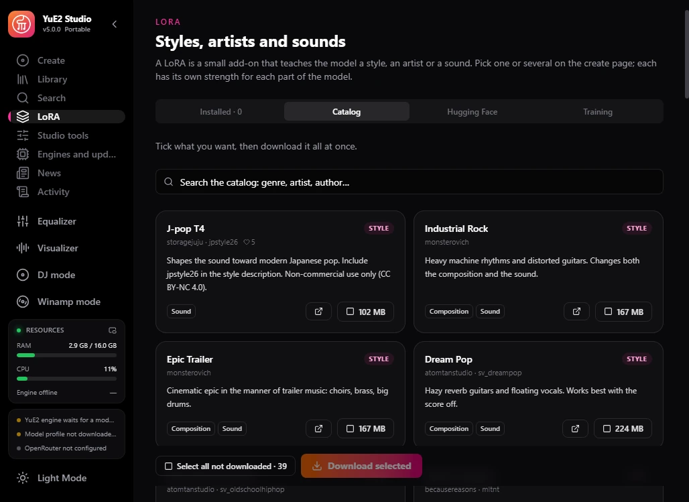
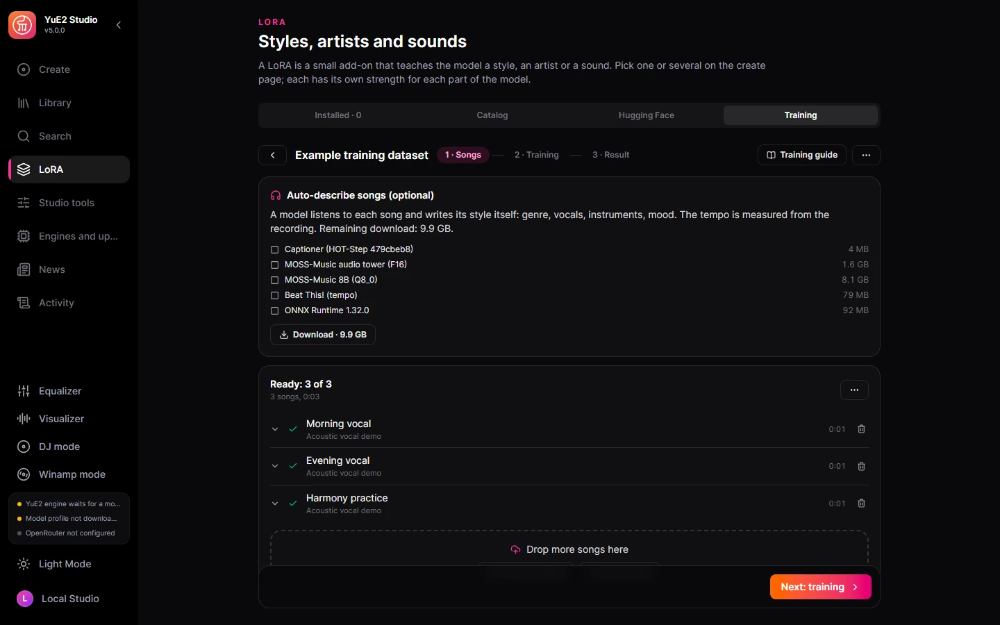
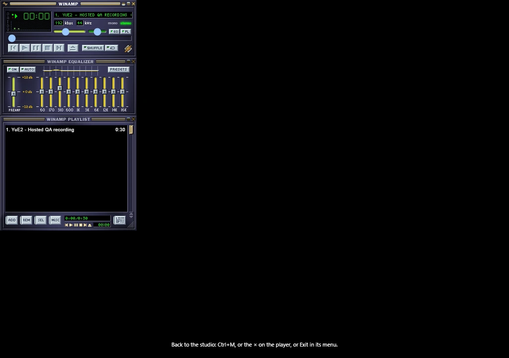
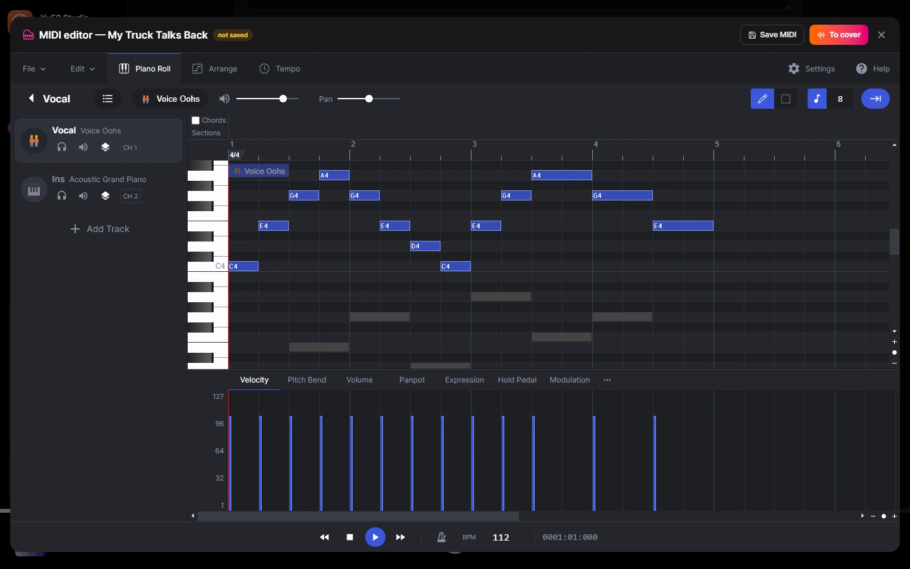
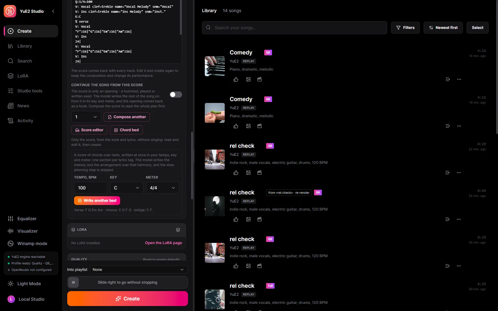

An editable score

The composition comes back as ABC notation, engraved as sheet music.
A desktop studio for YuE2, the open song model that writes a score before it sings.
Windows 10/11 x64 and a GPU with 6 GB of VRAM: NVIDIA (GTX 900 or newer) on CUDA; AMD and Intel on Vulkan are experimental. The models are downloaded from inside the studio when you decide to.

Rendered on a clean install with the recommended set, as the studio saved them. In English, Spanish, Mandarin, Japanese and Russian.
The composition comes back as ABC notation, engraved as sheet music.

SheetSage2 writes a recording’s melody down as a score, and YuE2 sings it in your style.

A song, a stem or a processed take becomes multi-instrument MIDI - 34 instrument groups and drums - with MuScriptor on your GPU.

Songs of one artist or style become a LoRA on your card, with HOT-Step’s trainer and recipe.

A track without one wears a free CC0 photograph from Wikimedia Commons that fits its style, a pattern in one of 21 styles, or a cover generated through OpenRouter.

Connect Claude Code, Claude Desktop or Cursor and the agent does everything the studio does: writes and makes songs, fills a dataset and trains, draws covers, cuts clips in the video editor, plays songs - and sees the window and presses its buttons.
Video reviews and tutorials made by the community.
Made a review or tutorial? Put a link to the project in the description — we feature the best here. Send yours through Issues →
The studio itself, in your language.









How long a 3-minute song takes, by graphics card. These are averages from what YuE2 Studio installations reported over 30 days (version 3.8, loading the models included; people run different model sets, so yours can differ).
| Your graphics card | A 3-minute song | Speed |
|---|---|---|
| NVIDIA, 24 GB or more | about 1 minute | 2.7× faster than real time |
| NVIDIA, 16 GB | about 2 minutes | 1.6× |
| NVIDIA, 12 GB | about 2 minutes | 1.4× |
| NVIDIA, 8 GB or less | about 5 minutes | 0.6× |
| AMD, 16 GB or more (Vulkan) | 3–4 minutes | 0.9× |
| Intel Arc, 12 GB (Vulkan) | about 7 minutes | 0.4× |
| Apple silicon, 24 GB or more | about 8 minutes | 0.4× |
| Apple silicon, 16 GB | about 15 minutes | 0.2× |
| AMD, 8 GB or less (Vulkan) | about an hour | 0.05× |
| No graphics card (processor) | about 2.5 hours | 0.02× |
On our machine (RTX 4090, Ryzen 9 9950X3D, Windows 11, the Q8_0 set): a 1-minute song in 20 s, a 4-minute song in 54 s, a 10-minute song in about 3 minutes; the card holds 5–8 GB while it works.
4.0.0 development builds · Windows 11 · Ryzen 9 9950X3D · RTX 4090 24 GB · CUDA 13
| Model and engine | Audio | Time | Speed | Peak VRAM |
|---|---|---|---|---|
| YuE2 · yue2.cpp · Q8_0 · Flash Attention | 60 s | 20.0 s | 3.0× | 5045 MiB |
| YuE2 · yue2.cpp · Q8_0 · Flash Attention | 240 s | 54.4 s | 4.4× | 6500 MiB |
| MiniMax Music3 · minimaxmusic.cpp · Q8_0 · 30 steps · CFG 1.5 | 30 s | 33.0 s | 0.9× | — |
Windows 11 (build 26100), Ryzen 9 9950X3D and RTX 4090 24 GB (driver 617.42). All runs used YuE2 3B Q8_0, the F32 VAE, NAR companion v9 and seed 1221. Replay used 100 fixed semantic tokens and two synthesis steps. Text to song started from style and lyrics and used 32 synthesis steps.
| Workload | Backend | Start to first WAV (s) | Warm median (s) | Peak GPU (GiB) | Above GPU baseline (GiB) | Peak process-tree RSS (GiB) |
|---|---|---|---|---|---|---|
| Semantic replay (3.999 s) | CUDA 13 · cuBLAS 13.10.0.20 | 6.516 | 0.172 | 6.88 | 4.51 | 3.40 |
| Semantic replay (3.999 s) | CUDA 12 · cuBLAS 12.9.2.10 | 4.969 | 0.125 | 6.88 | 4.50 | 3.45 |
| Semantic replay (3.999 s) | Vulkan | 13.766 | 0.252 | 6.54 | 4.17 | 3.82 |
| Semantic replay (3.999 s) | CPU | 16.234 | 3.503 | — | — | 6.41 |
| Text to song (29.999 s) | CUDA 13 · cuBLAS 13.10.0.20 | 8.813 | 4.759 | 8.13 | 5.75 | 3.37 |
| Text to song (29.999 s) | Vulkan | 16.609 | 5.861 | 8.19 | 5.81 | 3.08 |
Cold time includes server startup and the first request through receipt of the encoded WAV. Warm time is the median of three requests with the models kept loaded. Memory was sampled every 200 ms during startup and the first request. GPU peak is for the whole RTX 4090. The increase uses the reading before server launch as the baseline. CPU runs report process-tree RSS alone.
Windows · RTX 4090 · 617.42 · Turbo Q8_0 · 30 s · Euler × 8
| Backend | Start to first WAV | Warm median (3 runs) | Warm speed | Peak VRAM (whole GPU) | Peak process-tree RAM |
|---|---|---|---|---|---|
| CUDA 13 | 6.813 s | 0.474 s | 63.3× | 12.00 GiB | 1.97 GiB |
| Vulkan | 19.063 s | 0.507 s | 59.2× | 12.42 GiB | 2.66 GiB |
For seed 42, both WAVs contain 30.0 s of stereo audio at 48 kHz. Measured in 100 ms windows across both channels, the last 5.3 s on CUDA and 5.0 s on Vulkan stay below −60 dBFS RMS. The speed column uses the full WAV duration.
Windows on one RTX 4090 24 GB, using the same voice checkpoint and FAISS index with a retrieval blend of 0.5. Each run converts an existing vocal to a new voice.
| RVC backend | Input | First run, empty cache | Restart, saved cache | Warm request | Peak GPU memory |
|---|---|---|---|---|---|
| vocal-fast-rs · TensorRT-RTX | 4 s | 21.046 s | 1.694 s | 64.83 ms | 3.91 GiB |
| audio.cpp · CUDA | 4 s | 4.639 s | 4.448 s | 204.84 ms | 4.09 GiB |
| vocal-fast-rs · TensorRT-RTX | 30 s | 24.258 s | 2.009 s | 279.29 ms | 5.51 GiB |
| audio.cpp · CUDA | 30 s | 5.334 s | 5.477 s | 942.17 ms | 6.83 GiB |
Startup runs include process launch through the first saved WAV. Columns show medians of two empty-cache launches, three cached launches and three warm requests. Both warm paths use the same local HTTP client, from POST through writing the WAV. Peak memory is the median whole-card peak across three cached processes during warm conversion, including desktop usage. The engines search different numbers of FAISS lists; timing alone does not measure voice quality. Individual runs and build identifiers
Windows 11, RTX 4090, driver 617.42. Cold includes server launch and the first WAV response. Warm is the median of three requests to the same server. Memory peaks are cold-run whole-card VRAM and process-tree RSS. Compare rows within each workload and check the weight profiles, silence and exact build before drawing a speed conclusion. Warm pre-request VRAM is the median reading for the whole card immediately before those three requests. Resident WDDM VRAM and RSS are medians of three idle process-tree samples after one warm-up on the published CUDA 13 builds.
| Model and engine | Backend | WAV (s) | Cold (s) | Warm (s) | Warm audio s/s | VRAM peak / Δ (GiB) | Warm pre-request VRAM (GiB) | Peak RAM (GiB) | Resident WDDM VRAM / RSS (GiB) |
|---|---|---|---|---|---|---|---|---|---|
| YuE2 · yue2.cpp 892b9b0 · 3B Q8_0 + F32 VAE; NAR v9 · 30 s · 32 steps | CUDA 13 | 29.999 | 8.813 | 4.759 | 6.30× | 8.13 / +5.75 | 8.13 | 3.37 | — |
| YuE2 · yue2.cpp 892b9b0 · 3B Q8_0 + F32 VAE; NAR v9 · 30 s · 32 steps | Vulkan | 29.999 | 16.609 | 5.861 | 5.12× | 8.19 / +5.81 | 8.87 | 3.08 | — |
| YuE2 · audio.cpp 41242418 · 3B Q8_0 + F16 VAE; NAR v9 · 30 s · 32 steps | CUDA 13 | 29.999 | 16.807 | 7.441 | 4.03× | 7.02 / +4.68 | 3.16 | 6.24 | — |
| YuE2 · audio.cpp 41242418 · 3B Q8_0 + F16 VAE; NAR v9 · 30 s · 32 steps | Vulkan | 29.999 | 28.258 | 10.286 | 2.92× | 6.44 / +4.51 | 2.54 | 6.85 | — |
| YuE2 · yue2.cpp 892b9b0 · 3B Q8_0 + F32 VAE; NAR v9 · 100 tokens · 2 steps | CUDA 13 | 3.999 | 6.516 | 0.172 | 23.20× | 6.88 / +4.51 | 6.88 | 3.40 | — |
| YuE2 · audio.cpp 41242418 · 3B Q8_0 + F16 VAE; NAR v9 · 100 tokens · 2 steps | CUDA 13 | 3.999 | 7.482 | 0.383 | 10.44× | 6.28 / +3.92 | 3.03 | 5.84 | — |
| YuE2 · yue2.cpp 892b9b0 · 3B Q8_0 + F32 VAE; NAR v9 · 100 tokens · 2 steps | CUDA 12 | 3.999 | 4.969 | 0.125 | 31.95× | 6.88 / +4.50 | 6.88 | 3.45 | — |
| YuE2 · audio.cpp 41242418 · 3B Q8_0 + F16 VAE; NAR v9 · 100 tokens · 2 steps | CUDA 12 | 3.999 | 7.869 | 0.420 | 9.52× | 6.46 / +4.10 | 3.03 | 5.76 | — |
| YuE2 · yue2.cpp 892b9b0 · 3B Q8_0 + F32 VAE; NAR v9 · 100 tokens · 2 steps | Vulkan | 3.999 | 13.766 | 0.252 | 15.88× | 6.54 / +4.17 | 6.54 | 3.82 | — |
| YuE2 · audio.cpp 41242418 · 3B Q8_0 + F16 VAE; NAR v9 · 100 tokens · 2 steps | Vulkan | 3.999 | 8.373 | 0.974 | 4.11× | 6.31 / +3.94 | 2.89 | 5.33 | — |
| ACE-Step 1.5 · acestep.cpp 6e0e414 · Turbo Q8_0 + BF16 embedder/VAE · 30 s · 8 Euler steps | CUDA 13 | 30.000 | 6.234 | 0.392 | 76.51× | 9.73 / +7.80 | 9.74 | 2.11 | — |
| ACE-Step 1.5 · acestep.cpp 6e0e414 · Turbo Q8_0 + BF16 embedder/VAE · 30 s · 8 Euler steps | Vulkan | 30.000 | 7.204 | 0.381 | 78.69× | 8.58 / +6.65 | 8.57 | 2.00 | — |
| ACE-Step 1.5 · audio.cpp 41242418 · Turbo Q8_0, packed GGUF · 30 s · 8 Euler steps | CUDA 13 | 30.000 | 10.512 | 1.387 | 21.62× | 10.43 / +8.49 | 10.48 | 2.58 | — |
| ACE-Step 1.5 · audio.cpp 41242418 · Turbo Q8_0, packed GGUF · 30 s · 8 Euler steps | Vulkan | 30.000 | 21.746 | 2.237 | 13.41× | 10.23 / +8.30 | 10.22 | 4.60 | — |
| MiniMax Music3 Studio v4.0.3 · minimaxmusic.cpp f476b0e · Minimal Q3_K_M / Q4_K_M + F32 · 3.2 s · 2 steps | CUDA 13 | 3.193 | 7.312 | 1.257 | 2.54× | 9.32 / +7.38 | 9.32 | 4.56 | 7.39 / 0.89 |
| MiniMax Music3 · minimaxmusic.cpp f476b0e · Quality Q8_0 + F32 vocoder · 3.2 s · 2 steps | CUDA 13 | 3.193 | 9.156 | 1.852 | 1.72× | 15.18 / +13.23 | 15.18 | 8.91 | — |
| MiniMax Music3 · minimaxmusic.cpp f476b0e · Minimal Q3_K_M / Q4_K_M + F32 · 3.2 s · 2 steps | Vulkan | 3.193 | 7.343 | 1.987 | 1.61× | 8.96 / +7.03 | 8.96 | 4.33 | — |
| MiniMax Music3 · minimaxmusic.cpp f476b0e · Quality Q8_0 + F32 vocoder · 3.2 s · 2 steps | Vulkan | 3.193 | 16.047 | 2.295 | 1.39× | 14.94 / +13.00 | 14.94 | 8.35 | — |
| MiniMax Music3 · audio.cpp 41242418 · LM/depth/DiT Q8_0 · 3.2 s · 2 steps | CUDA 13 | 3.193 | 14.604 | 8.720 | 0.37× | 10.97 / +9.04 | 2.47 | 8.87 | — |
| MiniMax Music3 · audio.cpp 41242418 · LM/depth/DiT Q8_0 · 3.2 s · 2 steps | Vulkan | 3.193 | 17.621 | 10.478 | 0.30× | 10.65 / +8.72 | 2.39 | 8.66 | — |
| Stable Audio 3 · HOT-Step cdef1b0d67af · Medium BF16/F16 · 4 s · 4 steps | CUDA 12.8 | 4.000 | 6.737 | 0.254 | 15.72× | 9.30 / +7.37 | 9.30 | 2.82 | — |
| Stable Audio 3 · audio.cpp 41242418 · Small Music Q8_0 · 4 s · 4 steps | CUDA 12 | 4.000 | 1.259 | 0.078 | 51.18× | 3.54 / +1.60 | 3.55 | 1.17 | — |
| Stable Audio 3 · audio.cpp 41242418 · Small Music Q8_0 · 4 s · 4 steps | CUDA 13 | 4.000 | 1.893 | 0.071 | 56.00× | 3.53 / +1.60 | 3.54 | 1.18 | — |
| YuE2 Studio v4.1.1 · yue2.cpp 67f59c1 · 3B Q8_0 + F32 VAE · 100 tokens · 2 steps | CUDA 13 | 3.999 | — | — | — | — | — | — | 4.61 / 0.65 |
| ACE-Step Studio v4.0.2 · acestep.cpp 9eb75e8 · Turbo Q8_0 + BF16 embedder/VAE · 30 s · 8 Euler steps | CUDA 13 | 30.000 | — | — | — | — | — | — | 9.51 / 0.78 |
Runs, SHA-256 and weight profiles
Windows, AMD Radeon Graphics (gfx1036, UMA). The same audio.cpp revision generated 4 seconds in four steps with each backend. Cold is the first run. Warm is the median of three requests. WDDM dedicated and shared columns show sampled peaks at one-second intervals. audio.cpp 5e7273db
| Backend | Cold (s) | Warm (s) | WDDM dedicated peak (GiB) | WDDM shared peak (GiB) |
|---|---|---|---|---|
| HIP | 4.609 | 2.953 | 1.39 | 0.04 |
| Vulkan | 6.281 | 3.454 | 1.17 | 0.38 |
Same 12-second saved song and Radeon iGPU, four steps. Cold includes process startup. Warm is the median of three requests with weights resident. WDDM peaks are sampled per process on this adapter.
| Backend | Cold (s) | Warm (s) | WDDM dedicated peak (GiB) | WDDM shared peak (GiB) |
|---|---|---|---|---|
| HIP 188d13b3 | 22.749 | 18.483 | 0.28 | 4.39 |
| Vulkan 892b9b03 | 30.923 | 24.438 | 1.82 | 2.59 |
Windows 10/11 x64 and a GPU with 6 GB of VRAM: NVIDIA (GTX 900 or newer) on CUDA; AMD and Intel on Vulkan are experimental. The models are downloaded from inside the studio when you decide to.
A runnable set is the YuE2-3B backbone and the VAE; SheetSage2 is optional and only needed for covers.
| Your GPU | Set | Download |
|---|---|---|
| 12 GB+ | Full native — BF16, original weights | 9.7 GB |
| 8 GB+ | Quality — Q8_0, near lossless | 4.9 GB |
| 7 GB+ | Balanced — Q6_K | 4.0 GB |
| 5.5 GB+ | Light — Q5_K_M | 3.6 GB |
Sizes include SheetSage2. The studio preselects the set your card can run, but the download is always your decision. Every file is checked by SHA-256 against a pinned Hugging Face revision, and an interrupted download resumes.
Yes. The studio is free and open source, and the models download for free from inside it.
Your music is yours, and it stays on your disk.
The studio and yue2.cpp are MIT. The YuE2-3B and YuE2 VAE weights are CC BY-NC 4.0 with an individual-creator permission: musicians and creators working on their own may sell and monetize the songs they make; companies need a license from the authors. SheetSage2, used for covers, is CC BY-NC 4.0.
Songs of one artist or style become a LoRA on your card, with HOT-Step’s trainer and recipe. Every setting is editable, and datasets move between this studio and MiniMax Music3 Studio.
Connect Claude Code, Claude Desktop or Cursor and the agent does everything the studio does: writes and makes songs, fills a dataset and trains, draws covers, cuts clips in the video editor, plays songs - and sees the window and presses its buttons. The model’s writing rules come with it, so the agent writes the styles and lyrics itself. Pick it as the writing assistant and it writes instead of the local model.
Local by default. A cloud key is added by you, for the capability you choose.
| Part | Runs | Size |
|---|---|---|
| YuE2 engine (yue2.cpp) | Your GPU: CUDA, Vulkan or the processor | bundled |
| YuE2 model set | Your GPU | 3.6–9.7 GB |
| NVIDIA cuBLAS | NVIDIA cards only | 391 MB, once |
| Karaoke timings — Parakeet or Whisper | Your machine | optional |
| Stem separation — HT-Demucs | Your GPU or CPU | optional |
| Writing assistant | Local Gemma or OpenRouter | optional |
| LoRA trainer — HOT-Step ace-train | NVIDIA RTX 30 or newer, 11 GB of VRAM | 8 GB, optional |
| Describing songs by ear — MOSS-Music-8B | about 12 GB of VRAM | 10 GB, optional |
| VST3 host — HOT-Step | Your machine, a process of its own | bundled |
| Audio to MIDI — MuScriptor (HOT-Step ace-midi) | NVIDIA GTX 16 / RTX 20 or newer | 0.5–5.6 GB, optional |
The service is compiled into the desktop binary and supervises the C++ engine. Finished songs are imported by the service itself, so a result survives a reload or a closed window.
React UI ─┐
├─ YuE2-Studio.exe (Tauri window + Rust/Axum service)
Rust axum ┘ │
└─ yue2.cpp `yue-server` (C++/CUDA, GGUF)